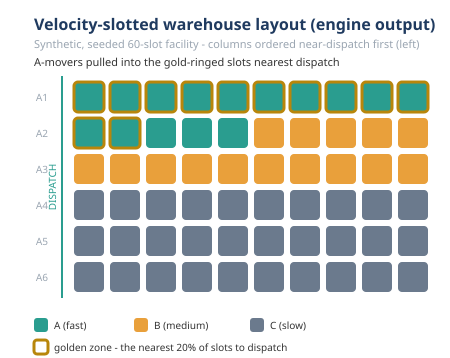
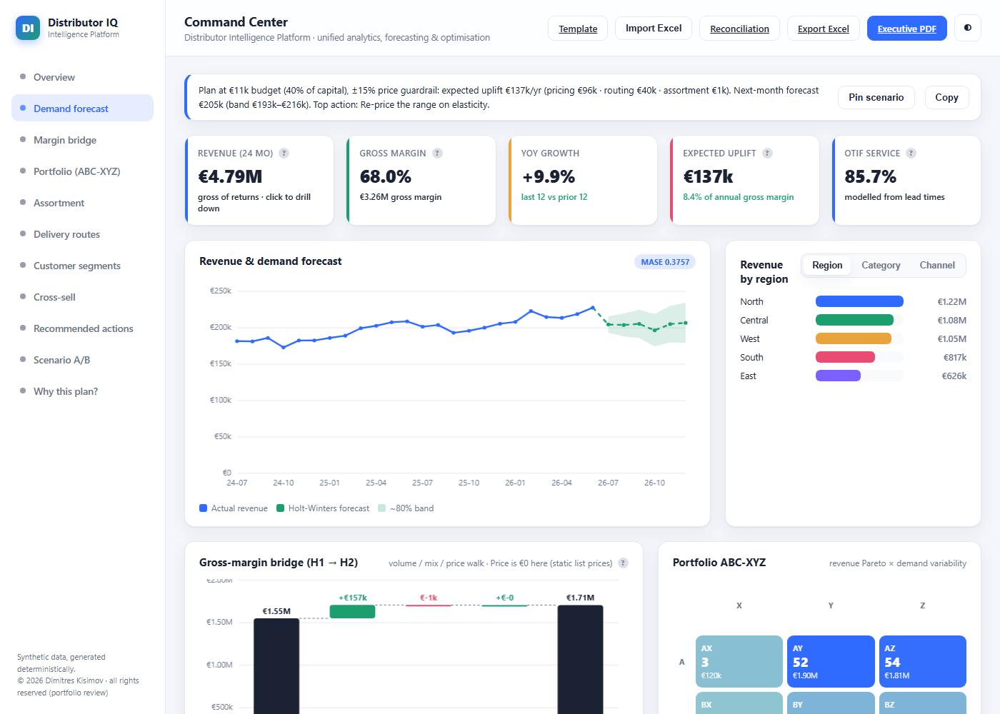

Data & AI Case Study
Mapped to two Würth internship roles · by Dimitres Kisimov · 2026
retail-analytics-real and decision-chain) are
completed: their numbers are measured on the public UCI Online Retail II dataset (CC BY 4.0)
and labelled real data wherever cited; decision-chain additionally labels its
invented physical layers synthetic-assigned on every line.
Deutsche Zusammenfassung:
docs/ZUSAMMENFASSUNG_DE.md
im Repository — Disclaimer zuerst, Kernidee, stärkste Belege (relative Verknüpfung; diese Seite
bleibt offline und lädt keine externen Ressourcen).
I built this to answer one question honestly: if I did a Data & AI internship at Würth, what could I actually contribute, and where is the evidence? Rather than assert skills, I mapped each posting requirement to something I have already built and measured in my portfolio.
(Agentic) Automation with Low-code Platforms
Agentic AI workflows, low-code (n8n / Power Automate), connecting systems & APIs, document automation, ROI, rapid prototyping.
Data & AI Analytics
BI / Power BI, KPI dashboards, forecasting & predictive analytics, Python & SQL, data modelling, turning data into decisions.
Featured work — one story, four flagships
The spine: prediction → operation → proof → buyer → revenue. Four elevated flagships mapped to concrete Würth opportunities (industrial MRO distribution, a catalogue in the millions of SKUs, ~2,600 branches / trade outlets — public, approximate — e-procurement / ORSY). Screenshots are local, offline assets. All metrics on synthetic data unless a line says real data.
WarehouseTwin — the operable WMS twin + plant simulator

Offline browser PWA: keyword-generate a full layout (offline NL parser, not a trained model), then simulate receiving → put-away → replenishment → picking → packing → shipping with ISO 22400-grounded KPIs. New depth: a one-click Story Mode cinematic tour, an 894-element signature plant (all 29 object types), a user-definable object library - and (v3.17-v3.19) a factory / process-industry simulator: a multi-way proportional-flow line sim (flow conservation verified at every node), a generator-emitted QA-split archetype with RPW balancing on resolved effective loads, and a fluids steady-state solver ("modelled, not measured", not CFD). Würth opportunity: branch and warehouse intralogistics across ~2,600 branches.
−48.6% pick travel · ABC ~21% > random · QA-split line 112.5 parts/hr at ≈88.1% efficiency · 112/112 self-test · 45 harnesses (synthetic)The OR engine behind the showpiece

3D carton packing (FFD + CP-SAT optimality proof), Hungarian slotting and a discrete-event sim, sharing the same wt-1 layout format the app uses. The figure is the engine's own hand-built SVG output (no plotting library, byte-identical across re-runs), the same velocity palette as the live dashboard. Würth opportunity: the tested core that keeps the twin honest.
Slotting −44.2% (golden-zone 25% → 100%) · fill 2.0% → 30.2%, 56 containers saved · routing: return +3.0% vs the exact optimum, optimized layout ~46% shorter (synthetic)One real dataset, reconciled end to end
UCI Online Retail II (1,067,371 raw rows, real data) through clean → forecast → replenish → slot → pick → route → a single reconciled ledger, with 13 cross-stage identities machine-checked to hold. Honest losses kept in the headline: naive wins lumpy demand (MASE 1.782); the exact slotting optimum is worth only −1.6% over ABC; every cost rate INVENTED and labelled — no profit claims. Würth opportunity: the losses concentrate at the seams between separate systems, and this proves the numbers still reconcile after every hand-off. (No screenshot — the deliverable is the numeric ledger, not a UI.)
13/13 identities PASS · cross-repo revenue £19,643,861.62 to the penny · additive identities (n), (o), (p) & (q): a forecast error moves only the holding line (elasticity == holding share exactly, 0.0580), the per-order cost-to-serve spread reassembles to the cent over 4,151 real orders - top decile 59.0%, Gini 0.665 - and the van-capacity sweep moves only the transport line, vans unpriced (real data + labelled synthetic-assigned layers)The MRO command center with a reconciliation guard

Flask decision cockpit — forecasting, assortment and routing behind one dashboard — with a reconciliation guard: a /reconcile executive brief renders a green "no silent drift" verdict, tracing every headline number to the engine field it came from. Würth opportunity: the operator's view over assortment, pricing, availability and logistics.
MASE 0.38 (9 folds) · 25.0% km saved · EUR 136,972/yr modelled uplift (8.4% of gross margin) · ROP/EOQ inventory policy: EUR 127,421 working capital (cycle + safety exactly), 5.5x turns, 99.9% fill · guard holds 16/16 identities (synthetic)Who Würth is (public info)
A large family-owned German-headquartered group in assembly/fastening and industrial MRO distribution. Public and approximate: ~400+ companies in 80+ countries, ~87,000 employees, ~€20B+ revenue, a catalogue in the millions of articles, multi-channel go-to-market (field sales, branches, e-commerce, e-procurement/EDI, ORSY inventory systems). A business that runs on assortment, pricing, availability, logistics, and high-volume transactional documents - a natural fit for applied Data & AI.
Opportunity map
Each Würth business area (public-info problem category) → the Data/AI approach → the portfolio repo and measured result. All results on synthetic data unless labelled real data.
Assortment & basket analysis
MILP selection vs. a greedy baseline; Apriori + FP-growth from scratch for
cross-sell; rule redundancy pruning (confidence improvement + closed/maximal itemsets) - 105
of the 254 rules (41%) are redundant, every pruned rule names the simpler rule that covers it,
and a pruned rule is not wrong, merely already said. revops-optimizer,
distributor-intelligence-platform, market-basket-analysis (68 tests).
Elasticity & leakage
Elasticity + Lerner pricing; discount-leakage detection; and a per-move
robustness gate - the same fixed-seed Monte-Carlo draws behind the published risk band
re-examine every recommended price move (carried in ≥90% of draws, same direction in
≥80%, positive € at the P10). The honest headline: the single biggest move (45% of the
whole pricing uplift) is HELD, because its SKU survives the assortment re-optimization in
only 67% of draws - a screening discipline on synthetic data, not a guarantee. And
ml-models-lab's new ablation study proves which piece of the elasticity model
earns its keep: retrained with the demand-shock (endogeneity) control knocked out, RMSE
explodes +1.446 (0.129 → 1.575) - the load-bearing piece, proven by retraining.
revops-optimizer, sales-kpi-analytics.
Newsvendor + forecasting
Service-vs-holding trade-off; demand forecasting drives replenishment; a
continuous-review (ROP, EOQ) policy turns the ABC-XYZ service targets into how much to hold and
when to re-order — working capital equals cycle + safety stock exactly, asserted by tests
("modelled, not measured", per the repo); and a supplier-reliability scorecard that measures
the PO receipt history instead of trusting the vendor master: 2,400 seeded receipts, 74.3%
on-time at a stated 2-day grace, and safety stock re-derived on measured lead times costs
+14.4% (+EUR 2,344) vs the quoted basis - split exactly into delay + variability, and the
wobble, not the lateness, is three quarters of the bill (kept out of the uplift total; seeded
synthetic receipts, labelled). distributor-intelligence-platform,
ml-models-lab, supply-network-opt.
KPIs + rolling-origin CV
KPI layer, forecasting with rolling-origin cross-validation, Power BI / DAX;
sales pacing & target attainment with an empirical 80% prediction interval — and the
closed-year back-check reported honestly: the realised year landed just above the projected
band. New rep performance decomposition - a fair comparison, because volume is not skill:
each rep's gap vs an even-share baseline splits exactly into coverage + frequency + mix +
execution (classic indirect standardization). The honest punch: the #2 rep by raw revenue has
an execution index of 0.9999 - the book, not the selling - and 92% of the league-table
dispersion is territory, only 8% execution.
sales-kpi-analytics, revops-optimizer.
Vehicle routing (CP-SAT)
Capacitated routing via OR-Tools CP-SAT vs. heuristics; plus the routing engine
in the platform, a demand-uncertainty robustness stress test (200 seeded scenarios,
detour-to-depot recourse — the noise level "modelled, not measured"), and the new
Fleet Size and Mix VRP: a typed vehicle pool with per-type capacities, EUR/km and a fixed
cost per deployed van, so the objective is money, not kilometres - consolidation wins the
big instance (5 large vans undercut 10 mediums by 17.5%) with the service price shown, not
hidden (longest route +25.2%), and the small instance is won by a genuine 1-medium +
2-large mix (+8.5% vs the best single size); illustrative catalogue costs, stated.
route-optimizer (46 tests), distributor-intelligence-platform.
Agentic + n8n low-code, with measured reliability
Agentic tool-use loops + an n8n RFQ-intake workflow - plus a seeded
reliability benchmark (1,350 trials over 9 offline task fixtures × 3 assumed tiers;
four-way failure taxonomy; retry economics). The kept negative result: guards catch
control-flow faults while content faults (a wrong-but-real SKU, a dropped line) fail
silently - at the anchor tier ~11,500 modelled silent-wrong quotes/yr that no retry
budget zeroes (a bigger budget slightly increases them). Fault rates are assumed scenario
parameters, labelled - not measured model behaviour. New content-verification layer - the
countermeasure, measured on the benchmark's own fault schedule (same seed, same 1,350
trials; the without-arm reproduces the published numbers verbatim, asserted in tests): the
business outcome is independently recomputed from the source input (no answer key, no LLM -
trust the tools, distrust the model), converting silent faults into detected ones:
delivered-correct 88.7% → 98.8%, silent-wrong 11,523/yr → 0 on that schedule, at
a visible price (escalations 260 → 1,300/yr; tokens ~$843 → ~$939/yr) - the prose
blind spot is unit-tested, not hidden; 71 tests. New in
agent-flow-studio: a dry-run cost/latency estimator that prices a designed flow
before it runs (declared rate card, per-node tokens/€/ms, branch scenarios enumerated as a
cheapest → dearest range - proven by tests to match real engine runs
branch-for-branch), honestly framed as "emphatically not a bill" (78 node tests).
agentic-automation-lab, agent-flow-studio.
RFQ / invoice extraction
Agentic extraction of documents into structured records, behind a confidence
gate plus a 7-rule field-level business-rule validation layer (arithmetic, required fields,
dates, IBAN/VAT) — the layer "checks format and internal consistency, not truth" — and an
extraction-error cost model that prices every measured gating policy in euros (€0.40
pre-filled review vs €25 per silent error): auto-posting pays only above a 98.4% precision
break-even and no measured policy clears that bar credibly - the confidence gate alone would
lose money on this set (modeled €181,778/yr vs €173,000 fully manual), so the honest
recommendation is to pre-fill everything and auto-post almost nothing; euros modeled, not
measured. doc-extract-agent.
Decline & churn detection
Classifier flags accounts whose ordering is declining; churn model with honest
probability calibration - and a new ablation study that retrains the churn model with each
claimed improvement knocked out: dropping the engineered freq_slope feature costs
−0.247 PR-AUC, the calibration knockout leaves PR-AUC bit-identical while ECE
collapses 0.021 → 0.197 (both reported), and two null knockouts inside the
bootstrap-CI noise band are not counted as wins.
revops-optimizer, ml-models-lab.
Warehouse / WMS digital twin + plant simulator
WarehouseTwin (v3.19): an offline, installable browser app. Describe a plant in
plain keywords and a transparent, deterministic generator builds a full layout — steered by
plain-language commands ("include 2 more RGVs in the picking sector") via an offline parser, not a
trained model — then simulate the WMS operation (receiving → put-away → replenishment
→ picking → packing → shipping) with ISO 22400-grounded KPIs and the bottleneck named,
a live animated material flow and a live KPI dashboard. Storage slotting/occupancy, automation
modelling (AS/RS, shuttle, RGV, AGV, conveyor), a factory process model & line simulation
(v3.17–v3.19: multi-way proportional-flow routing with flow conservation verified at every
node; a generator-emitted "Machining shop with QA split" archetype — offered 120 parts/hr,
bottleneck QA deep test → 112.5 parts/hr at ≈88.1% line efficiency, hand-computed and
harness-pinned — with RPW balancing on resolved effective loads; and a fluids steady-state
solver: pipes/tanks/mixers in m³/h, the saturated pipe named as the bottleneck, tank overflow
horizons as pure arithmetic, volume conservation verified at every node — "modelled, not
measured", NOT CFD or a validated DES), an editable standards knowledge base, a one-click
Story Mode cinematic tour, an 894-element signature plant (all 29 object types) and a
user-definable object library, 23 example
scenarios, a canvas to 400×250 m and a 2.5D view; import your own article/order CSVs
(in-browser, row-numbered validation, orders replayed exactly, honest "Data: yours" badge) and a
floor-plan underlay with two-point calibration; outputs a WMS Report (print/JSON/CSV) and a scoped
IFC4 export. Plus container packing, slotting, discrete-event sim, pick-path routing and order
batching in logistics-digital-twin - batching walked on the same aisle geometry
against the same exact optimum (Held-Karp extension): savings batching cuts pick travel
−71.3% and flips the routing recommendation from return to largest-gap as tour density
rises 2.9 → 6.0 faces - the textbook density result, measured; no batching policy can
lose to single-order picking under exact routing (a theorem, verified per batch).
logistics-flow-studio (WarehouseTwin).
Standards panel (ISO 22400, DIN 15185, ASR, EN, VDI) framed "aligned to, not a certification".
Facility location + flows + safety stock
Capacitated facility-location MILP vs. greedy; min-cost flow with an
independent cross-check; multi-echelon safety stock with risk pooling; an inventory
service-level frontier pricing each extra point of service (illustrative rates, stated); and
a demand-growth capacity plan - a 1.00x-2.00x sweep re-solving the same MILP unconstrained
and with today's DCs pinned: the lean network has only +8.8% growth headroom, the first
response to growth is a reshuffle (not a new DC), the 4th DC first pays at 1.30x, and the
plant echelon's 2.10x ceiling binds before the DC pool's 2.74x. Uniform growth and flat rates
are stated assumptions - planning estimates, not forecasts.
supply-network-opt (71 tests).
Load forecasting + peak shaving
Day-ahead load forecasting under rolling-origin CV (temperature + calendar
regression vs seasonal-naive vs Holt-Winters), then battery dispatch against the monthly
demand-charge peak as a linear program - methods from scratch on numpy/scipy - plus a causal
day-ahead dispatch backtest (weekly-refit forecast, month-anchored plan, meter-clamped
execution) measured against the perfect-foresight bound, and a new change-point degree-day
decomposition (ASHRAE Guideline 14 / PRISM, hour-of-week demeaned so a two-shift schedule
cannot masquerade as weather) whose ground-truth recovery is asserted by tests: the designed
balance points come back exactly (19.0 / 6.0 °C) - and weather turns out to be 4.5% of
the year's energy but 18% of the July peak hour (a modelled attribution, not a sub-meter).
energy-demand-forecast (72 tests). Honest losses reported: Holt-Winters loses to
the naive baseline (MASE 3.040 vs 1.369); at an assumed EUR 120k-180k battery cost the
saving is a 10+ year simple payback - the battery does not pay for itself on these
assumptions, and the repo says so; and the robust dispatch variant is a measured negative
result that stays in the table (65.4% capture, 42% more cycling).
Surface-defect screening
Three detectors trained on clean images only (local statistics, PCA
reconstruction, small conv autoencoder), one scoring rule fixed in advance, and a
pre-registered complexity rule for the recommendation; plus SPC monitoring of the deployed
screen - a p-chart with Phase-I frozen limits under the four Western Electric run rules -
and a new measured out-of-control action plan: four responses to the confirmed camera-drift
alarm, measured and costed (in control: 358 EUR/1,000 parts). The headline is a trap - the
cheap label-free threshold re-centering quiets the p-chart by construction while its
ROC-AUC stays bit-identical to doing nothing (1.1 of 15 defects caught at +0.10 drift); a
refit on 200 recent verified-clean frames genuinely closes the loop (~99% of the drift cost
recovered at +0.05 and beyond); the refit's free-and-verified assumption is stated.
quality-anomaly-vision
(59 tests). The autoencoder's 0.007 ROC-AUC lead is inside the pre-registered 0.02 margin,
so PCA is recommended over the deep model; texture-breaks stay hard for every method (best
AUC 0.609), stated plainly; and the calibration correction is measured - the threshold's
"zero false rejects" on the test set does not survive 1,000 fresh clean parts (0 → 0.70%).
One dataset through the whole chain
The UCI Online Retail II transactions (1,067,371 raw rows, real data) flow
through clean → forecast → replenish → slot → pick → route →
cost, and a reconciliation ledger machine-checks 13 cross-stage identities - all PASS,
including cleaned revenue reproduced across two repositories to the penny and the cost
ledger's total to the cent. Honest findings kept in the headline: naive wins lumpy demand
(MASE 1.782); the exact slotting optimum is worth only 1.6% over classic ABC; CVRP beats
Clarke-Wright by only 0.2% and loses 19 of 48 days; the crew is 18% utilized; every invented
cost rate is labelled INVENTED - no profit claims. Three additive identities extend the suite:
(n) rebuilds the ledger total from the physical drivers to the cent; (o) proves a forecast
error moves only the holding line - the elasticity of total cost equals the holding share
exactly, 0.0580 on the committed full run; and (p) spreads the ledger over the window's 4,151
real orders by labelled allocation rules and reassembles it - every column back to its ledger
line to the cent, both planes to the ledger total to the cent, per-order real revenue to the
window revenue to the penny - with the concentration measured (top decile 59.0% of delivered
cost, Gini 0.665) and honestly read as the model's shape under invented rates, never order
profitability; and (q) sweeps the van-capacity dial 1-320 with every delivery day's CVRP
re-solved per setting - only the transport line moves, capacity buys km only while it binds,
and vans are unpriced in this ledger, so the curve is a model property, never fleet advice.
Offline dashboard with the 13-identity
panel; byte-reproducible deliverables from a committed run artifact; a deliberate-corruption
FAIL path per identity in the tests.
decision-chain; agentic layer via MCP in chain-mcp - with
contract-enforced machine-readable result provenance on every tool result (canonical data
label, engine repo + commit, determinism flag, cross-checked against the tool's prose) and
new idempotency + result caching: a reproducible SHA-256 key binds the arguments and the
exact engine checkout, and every success says whether it was computed or replayed
(provenance.cache, required by the contract envelope; 193 tests).
Retail analytics on real rows
The completed real-data counterpart: UCI Online Retail II (1,067,371 genuinely
messy real rows, 2009-2011, CC BY 4.0). The cleaning pipeline logs every step - 94.0% of rows
retained, 22.77% missing CustomerID flagged (kept for revenue, excluded from customer
analytics), £19,643,862 revenue analyzed. Full returns & cancellations analysis: returns run
at 3.65% of gross value across 17,914 return lines in 7,405 cancellation invoices; with no
credit-note → invoice key in the data, attribution is a labelled heuristic (most recent
prior same-SKU, same-customer sale) - 95.0% of returned value matches a prior purchase at a
median 10-day lag, "a heuristic attribution, not a linked RMA". RFM:
5,852 customers, 10 segments. New lifecycle segmentation & growth accounting (5,824
customers, 24 complete months; the 3-month dormancy threshold audited against the measured
gap distribution; flow-matrix structural zeros asserted by tests): in the average month
resurrected buyers (439) outnumber month-over-month repeats (390), dormant customers return
at 8.9% per month, and 31.2% of stage-attributed revenue is customers coming back from a gap
- for this wholesale-heavy base, skipping months is normal purchasing behaviour, and a CRM
that treats every one-month absence as churn would misread most of it. 113 tests on a
committed real-data fixture; QA'd figures;
exec PDF + Excel. Honest forecasting headline: the naive baseline won.
retail-analytics-real.
Cost-based alerting + gated retrain promotion
Fraud operations, not just a score: model → calibrated probabilities →
cost-based alert threshold → analyst review-queue optimization, from-scratch NumPy on
~60,000 seeded synthetic transactions (~1.45% fraud prevalence), measured against both the
random floor and the generator's own oracle ceiling. A champion/challenger retrain harness
with swap-set analysis and five pre-declared promotion gates: the verdict on this run is
PROMOTE - and the repo says plainly that the retrain finds no new fraud, wins purely by
shedding analyst load, and the $210 (2.4%) margin is modelled, not measured, resting entirely
on the $8/review assumption. New selective-labels feedback simulation (four labelling-policy
arms, threshold and review capacity frozen): ranking survives label censoring (final PR-AUC
0.268-0.273 across arms) but the probabilities die - the assume-legit arm degrades to 3.2x
the oracle's ECE and starves its own alert queue 651 → 197 while its dashboard reads
100% observed recall by construction (the model grades its own homework); a model of a
process, not a measurement of one, and the repo says so.
fraud-detection-ops (55 tests).
Censored Weibull + age-replacement vs condition-based
The maintain-or-replace question, computed: sensor anomaly detection (PCA
baseline ROC-AUC 0.937 / PR-AUC 0.926, 10/10 machines detected - the deep model loses and PCA
is recommended), a censored Weibull fit (β 4.81, η 73.6 days over 6 failures + 14
right-censored survivors), age-replacement optimization, and CP-SAT crew scheduling
(−23.2% weighted delay vs FIFO, proven OPTIMAL). The honest headline: the calendar rule
beats the repo's own detector at the default threshold - false alarms book more than half the
condition-based cost, and β ≈ 4.8 is exactly the regime where a calendar rule is
hard to beat; "the trade-off is computed, not asserted". New CBM threshold re-optimization -
the loop closed: an exact sweep re-prices the condition-based policy at every candidate
threshold, and economically tuned (0.262 → 0.397) CBM falls to 4.02/machine-day, under
the age-replacement optimum's 7.16 - the ranking flips to condition-based, with a closed-form
break-even inspection cost of 553.3 (~11x the assumed 50). Honestly bounded: the tuned
threshold is selected in-sample, so the flip is "the shape of the closed loop, not a
certified operating point". Everything modelled, not measured.
predictive-maintenance (80 tests).
Job #1 - Skill map: (Agentic) Automation with Low-code
| Requirement | Repo / artifact | Proof (synthetic) |
|---|---|---|
| Build AI-agent workflows - and measure how they fail | agentic-automation-lab + eval/reliability.py benchmark + eval/verification.py content-verification layer | agentic tool-use loops with measured reliability: 1,350 seeded trials (50 per task × 9 fixtures × 3 assumed tiers) scored into a four-way failure taxonomy (success / recovered / detected / silent); anchor tier: 76.8% success / 13.6% detected / 9.6% silent; guards catch control-flow faults while content faults fail silently; retry economics: 2 retries deliver 88.7% correct for ~$843/yr in tokens but ~11,500 silent-wrong quotes/yr - no tier zeroes them by retries alone; fault rates are assumed scenario parameters, stated. Content-verification layer - the countermeasure, replaying the exact fault schedule (same seed; the without-arm reproduces the published numbers verbatim, asserted in tests): independent recompute from the source input (no answer key, no LLM - trust the tools, distrust the model) converts silent faults into detected ones - delivered-correct 88.7% → 98.8%, silent-wrong 11,523/yr → 0 on that schedule, escalations 260 → 1,300/yr and tokens ~$843 → ~$939/yr stated; catch rate is a property of this schedule's recomputable ground truth, not a production guarantee; the prose blind spot is unit-tested, not hidden; 71 tests (synthetic) |
| Agentic integration via an open standard (MCP) | chain-mcp - MCP server on the official mcp Python SDK; contract + provenance + cache layers; Claude Desktop / Claude Code configs | 6 real engines (forecast, slotting, packing, routing, leakage, audit) exposed as AI-callable tools with typed schemas, never-crash structured errors and a per-tool honesty label (data_note); contract-enforced machine-readable result provenance on every result, success or error (canonical data label, engine repo + commit, determinism flag - cross-checked against each tool's prose so label and wording cannot disagree); new idempotency + contract-enforced result caching: a reproducible SHA-256 idempotency key binds the canonical arguments and the exact engine checkout - a cached result can never outlive the code that computed it - and every success carries provenance.cache (cacheable / hit / key), required by the contract envelope, so an agent always knows whether a number was computed or replayed (never-deterministic tools and errors are never cached; in-process only, honestly scoped); 193 tests incl. a live JSON-RPC handshake and an engine-free input-validation matrix; 5 tools on synthetic seeded data, forecast_demand on the real UCI pipeline (labelled) |
| Low-code (n8n / Power Automate) | agentic-automation-lab/n8n/rfq_intake_agent.json | RFQ-intake agent; ~€625k/yr |
| Visual / flow-based building | agent-flow-studio + estimator.js (the € Estimate button; committed deterministic FLOW_COST_REPORT.md) | flow builder; ~€47k/yr modelled. New dry-run cost/latency estimator: the graph is priced before it runs against a declared rate card (agent prompt = declared base + a declared amount per toolbelt entry + trigger text at ~4 chars/token) - per-node tokens/€/ms, sequential and critical-path latency, every model profile, and the branch scenarios enumerated as a cheapest → dearest range, with the tests proving each scenario's executed set matches a real engine run branch-for-branch; "emphatically not a bill" - the shipped agent is a free deterministic mock, rates are illustrative inputs, and a cyclic flow gets its estimate withheld, not invented; 78 node tests (synthetic; declared rates, labelled) |
| Connecting systems / APIs | agentic-automation-lab connector layer | agents call external APIs |
| Process automation (back-office) | doc-extract-agent | RFQ/invoice → structured, behind an auto-post/needs-review confidence gate; ~€145k/yr modelled - now bracketed by the extraction-error cost model from measured operating points (€100,556-€152,556/yr depending on gating policy) |
| Document intake / understanding | doc-extract-agent - extraction + 7-rule business-rule validation layer + extraction-error cost model (eval/run_cost) | 7 field-level rules (arithmetic, required fields, dates, IBAN mod-97, VAT shape); combined-gate auto-post precision 70.0% → 87.5% on the eval set - the remaining error (a currency mis-inferred from prose) is reported, not hidden. Cost model at the business case's modeled rates (€0.40 review, €25 per silent error): auto-post pays only above 98.4% precision and no measured policy clears that bar credibly - the confidence gate alone would lose money (modeled €181,778/yr vs €173,000 manual), the validation layer is worth ~€109,333/yr in this model, and ~€149,000/yr of the value is the pre-fill, not the skipped confirm; euros modeled, not measured |
| Rapid prototyping | agent-flow-studio, agentic-automation-lab, logistics-flow-studio | runnable prototypes; a full installable offline WMS twin + factory/plant simulator (PWA, v3.19; 45 harnesses + 112/112 self-test) |
| Prototyping + education (explaining tech without hype) | quantum-explainer - live & installable at dimitres-kisimov.github.io/quantum-explainer (plain-text address; this page loads nothing external); bio-efficient-ai - bioai/biohash.py + committed grid | hand-written state-vector simulator (~300 lines, zero dependencies); lessons through Deutsch's algorithm, Grover's search and superdense coding - two classical bits through one transmitted qubit via a pre-shared Bell pair, mechanism-verified in the suite, honestly framed: the encoded pair is locally invisible (no-signalling made concrete - no faster-than-light communication) and Holevo's bound is respected, not beaten; 201 physics assertions + a 53-check portable self-test + 93 structural/offline checks pass; no frameworks, no build step, no network calls. bio-efficient-ai aims the same hype-free discipline at bio-inspired AI - new learned-vs-random BioHash study on the public MNIST benchmark, at an operating point where learning cannot win by circuit size (10× smaller expansion, cheaper learned projection): learning wins the benchmark's mid-range at a discount (precision@10 +0.004 to +0.017 at 8-128 hash bits) - and the negatives stay in the table: both tips lost (saturating outright at 1,024 bits), no memory-frontier point classical LSH holds, a one-time ~1.62 × 10¹²-MAC training bill, and corpus dependence the random methods simply do not have |
| Show automation ROI | automation-roi-explorer | €383k/yr net modelled |
| Python engineering | all automation repos | Python throughout |
| Stakeholder communication | automation-roi-explorer | business-readable ROI views |
Job #2 - Skill map: Data & AI Analytics
| Requirement | Repo / artifact | Proof (synthetic unless noted) |
|---|---|---|
| One dataset through the whole chain - integration whose numbers reconcile (real data + labelled layers) | decision-chain - committed run artifact artifacts/full_run.json; offline CHAIN DASHBOARD with the 13-identity reconciliation panel; order_costs.py + fleet_sweep.py chain consumers; byte-reproducible PDF + Excel; a deliberate-corruption FAIL path per identity in the tests | real data: UCI Online Retail II (1,067,371 raw rows) through ingest → forecast → inventory → warehouse → transport → costing; all 13 machine-checked identities PASS - cross-repo revenue £19,643,861.62 to the penny, ledger total to the cent (253,427.16), every pick/carton/route drop conserved (256,787 lines; 70,820 cartons; 4,151 drops); additive identities (n), (o), (p) and (q): the ledger total rebuilt from physical drivers to the cent; a forecast error moves only the holding line - elasticity of total cost == holding share exactly, 0.0580 on the committed full run; the per-order cost-to-serve spread reassembled to the cent over 4,151 real orders (both planes to 253,427.16; per-order real revenue to the window revenue to the penny) - top decile 59.0% of delivered cost, Gini 0.665, the model's shape under invented rates, never order profitability; and the fleet knob - the van capacity (labelled synthetic-assigned) swept 1-320 with every delivery day's CVRP + Clarke-Wright re-solved per setting by the existing engine and all 13 identities re-checked at every point: only the transport line moves (labour/holding/facility/real revenue invariant to the cent; drops and cartons conserved exactly), capacity buys km only while it binds (1,686.7 km bought going 40 → 80 cartons vs 194.8 going 160 → 320 on the fixture path), Clarke-Wright within 1.2% across the dial - and vans are unpriced in this ledger, so the curve is a model property, never fleet advice. Honest findings: naive wins lumpy demand (MASE 1.782); slotting optimum only −1.6% vs ABC (math explained); CVRP −0.2% vs Clarke-Wright, loses 19 of 48 days; crew 18% utilized; every cost rate INVENTED and labelled - no profit claims |
| BI / Power BI | revops-optimizer/powerbi/DAX_measures.md + disconnected kpi_uplift_risk table | DAX pack + 3-page report; the star schema also emits a Power BI risk table (Monte-Carlo P10/P50/P90 band + VaR/CVaR) with matching DAX measures |
| Uncertainty / risk quantification on business numbers | revops-optimizer (revops/simulate.py Monte-Carlo + tornado + revops/robustness.py accept/hold gate); ml-models-lab (docs/BENCHMARK_CI.md); sales-kpi-analytics pacing interval | Joint Monte-Carlo band on the EUR 159,966/yr headline: P10–P90 EUR 145,091–170,723/yr, median below the point estimate, only ~43% chance of clearing it - illustrative planning ranges on synthetic data, not a forecast; one-way tornado ranks the drivers. New price-move robustness gate replaying the same fixed-seed draws (a test pins the per-draw totals): every recommended move gated on carry ≥90%, same direction ≥80%, positive € at the P10 - 17 of 29 ACCEPT (EUR 19,032/yr), 12 HOLD (EUR 16,187/yr parked), and the single biggest move (45% of the pricing uplift) is HELD on a 67% carry rate - a screen, not a guarantee; 69 tests. Bootstrap 95% skill CIs: churn +0.457 [+0.381, +0.528], elasticity +0.918 [+0.904, +0.934], both above zero (torch models excluded on purpose - not bit-reproducible) |
| Inventory policy / working capital | distributor-intelligence-platform (dip/inventory.py + dip/reliability.py supplier scorecards); supply-network-opt service frontier | Continuous-review (ROP, EOQ) policy at ABC-XYZ service targets (A/X 98%, C/Z 88%): EUR 127,421 working capital - cycle + safety exactly, asserted by tests - 5.5x turns, 66 days of cover, 99.9% demand-weighted fill; "modelled, not measured". New supplier lead-time reliability - measure the receipts, not the vendor master: 10 suppliers, 2,400 seeded receipts, 74.3% on-time (2-day grace); safety stock on measured lead times EUR 18,626 vs quoted-basis EUR 16,282 (+14.4%), split exactly into delay (EUR 576) + variability (EUR 1,768) - the wobble, not the lateness, is three quarters of the bill; quoted basis reproduces the inventory engine SKU by SKU (tested); kept out of the uplift total. Frontier: 97.5% → 99.0% costs ~$14,750/yr per service point, ~6.3x the first increment (synthetic) |
| KPI dashboards / metrics - incl. fair performance measurement | sales-kpi-analytics + pacing bullet chart (deliverables/pacing_bullet.svg) + rep decomposition (repperf.py) | KPI layer + exec PDF; pacing & target attainment: run-rate €10.91M = 95.7% of the assumed €11.40M plan, empirical 80% prediction interval (€10.77M–€11.05M) - and the closed-year back-check reported honestly: realised €11.28M (98.9%) landed just above the band. New rep performance decomposition: gap vs even-share baseline = coverage + frequency + mix + execution, exactly (indirect standardization) - the #2 rep by raw revenue has an execution index of 0.9999 (mix +€354.5k, frequency +€198.4k, coverage −€215.8k, execution −€127: the book, not the selling), one rep swings #6 → #11 adjusted, and 92% of the league-table dispersion is territory - SVG labels read back and asserted equal to the source to the cent |
| Predictive analytics / forecasting | sales-kpi-analytics rolling-origin CV; ml-models-lab global forecaster | MASE < 1 vs seasonal-naive; MASE 0.987 / RMSSE 0.948 vs seasonal-naive (1.080/1.062) and Holt-Winters (1.101/1.019) |
| Forecasting rigour | distributor-intelligence-platform | MASE 0.38 (9 rolling folds); /reconcile guard: 16/16 cross-engine identities, all 21 headline numbers present |
| Energy forecasting + optimization | energy-demand-forecast - forecasters + peak-shaving LP + causal dispatch backtest + degree-day decomposition from scratch (numpy/scipy); 72 tests | regression MASE 0.497 / MAPE 4.8%, 14/14 CV folds vs seasonal-naive (1.369 / 17.6%); Holt-Winters loses to the naive baseline (3.040 / 37.6%), reported; LP cuts mean monthly peak 368.2 → 291.1 kW (−20.9%), ~€11,100/yr at an ASSUMED €12/kW-month tariff, timer baseline €0; at an assumed €120k-180k battery cost: 10+ year simple payback - the battery does not pay for itself on these assumptions; causal day-ahead dispatch backtest: the deployable controller captures 72.7% of the perfect-foresight LP bound, and the robust variant is a measured negative result kept in the table (65.4%); new change-point degree-day decomposition (ASHRAE Guideline 14 / PRISM, hour-of-week demeaned): the fit recovers the generator's designed balance points exactly (19.0 / 6.0 °C, asserted by tests) - weather is 4.5% of the year's energy but 18% of the July peak hour (76 of 412 kW is chiller load); a modelled attribution, not a sub-meter |
| Python for analytics | sales-kpi-analytics, revops-optimizer | end-to-end pipelines |
| SQL / data modelling | sales-kpi-analytics SQL set | spend analysis queries |
| Excel-level tabular analysis | sales-kpi-analytics | spend breakdowns |
| Optimization / prescriptive | revops-optimizer MILP + newsvendor; supply-network-opt; logistics-digital-twin packing | ~€160k/yr uplift; 3 of 8 DCs at −21.2% cost vs greedy; LP == graph to $0.00; fill 2.0% → 30.2%, 56 containers saved, CP-SAT optimality proof |
| Elasticity / statistical modelling | revops-optimizer predict layer; ml-models-lab (+ mllab/ablation.py → docs/ABLATION.md, drift-gated by tests) | ROC-AUC 0.99; elasticity bias +1.52 → +0.03 (profit regret 0.89%); churn PR-AUC 0.653, ECE 0.197 → 0.021, bootstrap skill CI +0.457 [+0.381, +0.528]. New ablation study - each claimed "one improvement" retrained with the piece knocked out, through the model's own pipeline entry point: dropping freq_slope costs churn −0.247 PR-AUC (0.653 → 0.406); dropping the demand-shock control costs the elasticity model +1.446 RMSE (0.129 → 1.575) - endogeneity handling is the load-bearing piece; the honest exception: removing Platt calibration leaves PR-AUC bit-identical while ECE collapses 0.021 → 0.197, and two null knockouts inside the bootstrap-CI noise band are not counted as wins; numpy models only, CI-reproducible on purpose |
| Data into business decisions | sales-kpi-analytics; market-basket-analysis | €2.6M leakage lever; cross-sell recs from 254 rules (top lift 2.41), 3 segments |
| Market-basket / cross-sell | market-basket-analysis + basket/affinity.py + basket/redundancy.py | Apriori + FP-growth from scratch, exact equality cross-check; 224 itemsets, 254 rules; affinity network: 3 communities via greedy modularity (Q=0.58), 4 bridge edges (strongest electrical–lubricants, lift 1.40) - honestly noted as machinery validation, not customer discovery. New rule redundancy pruning (confidence improvement, closed/maximal itemsets): 105 of 254 rules (41%) redundant, the 149 kept carry all the information, every pruned rule names its covering rule (the coverer is asserted kept); 224 closed / 126 maximal - closure does not compress here, and the doc says so; 68 tests |
| Classification / anomaly detection | ml-models-lab | SKU classifier macro-F1 0.963; anomaly AE PR-AUC 0.963 vs PCA 0.951 (narrow win; PCA recommended default) |
| Visual quality inspection (vision) | quality-anomaly-vision - 3 detectors trained on clean images only, one pre-fixed scoring rule, metrics from scratch; qav/spc.py + qav/recalibration.py; 59 tests | conv AE ROC-AUC 0.779 vs PCA 0.772 vs local stats 0.687 - inside the pre-registered 0.02 margin, so PCA recommended over the deep model; PCA wins TPR 0.407 vs 0.393 @ 5% FPR and mean IoU 0.207; texture-breaks hard for all (best AUC 0.609); training the AE longer made it worse (0.779 → 0.738); SPC: p-chart + Western Electric rules - process shift caught by a run rule while naked 3σ never fires, and the measured calibration correction (0 → 0.70% on fresh parts) is reported. New measured out-of-control action plan - four responses to the confirmed camera-drift alarm, costed (in control: 358 EUR/1,000 parts): the cheap label-free threshold re-centering is a trap the chart cannot see - it quiets the p-chart by construction but its ROC-AUC is bit-identical to doing nothing (1.1 of 15 defects caught at +0.10 drift, AUC 0.538 at +0.20, behind an in-control-looking flag rate); re-fitting on 200 recent verified-clean frames closes the loop (~99% of the drift cost recovered at +0.05 and beyond); one drift mode, refit assumed free and verified - stated, not hidden |
| Warehouse / intralogistics + factory / process industry | logistics-flow-studio (WarehouseTwin v3.19); logistics-digital-twin | optimizer −48.6% pick travel (demo layout; pinned in the repo's docs/MEASUREMENTS.md); ABC 80/20 ~21% > random; 45 harnesses + 112/112 self-test; factory pass (v3.17-v3.19): multi-way proportional-flow line sim with conservation verified at every node; the generated QA-split archetype resolves to 112.5 parts/hr at ≈88.1% line efficiency (harness-pinned RPW balance on effective loads); fluids steady-state solver names the bottleneck pipe and computes the demo tank FULL in 96 min ("modelled, not measured", not CFD); bring-your-own-data: article/order CSV import 100% in-browser (row-numbered validation, orders replayed exactly, honest data badge) + floor-plan underlay with two-point metric calibration, both excluded from share links by default; slotting −44.2% (break-even ~0.7 days); DES cycle −76.1%, travel −66.5%; pick-path routing: return +3.0% vs the exact Ratliff–Rosenthal optimum (s-shape +7.1%), optimized layout ~46% shorter at fixed policy (51.4 → 27.5 m/order); order batching on the same exact-optimum yardstick (Held-Karp extension): savings batching 2,692 → 774 m/shift (−71.3%), batching + slotting stack, and the routing recommendation flips to largest-gap (+1.2%) at 6.0 faces/tour - no batching policy can lose to single-order picking (theorem, verified per batch) |
| Logistics / ops analytics | route-optimizer (46 tests, incl. routeopt/fleetmix.py); supply-network-opt (71 tests, incl. supplynet/growth.py) | 4.6% / 31% savings; robustness: 5% capacity headroom cuts failing scenarios 96% → 44% and the expected day −4.6% across 200 seeded demand scenarios (noise "modelled, not measured"); new Fleet Size and Mix VRP (typed vehicle pool, fixed + per-km costs - the objective is money, not km): 5 large vans undercut the status-quo 10 mediums by 17.5% with the service price shown, not hidden (longest route +25.2%), and on the small instance a genuine 1-medium + 2-large mix beats the best single-size fleet by 8.5% (illustrative catalogue; heuristic under a fixed budget - the deliverable reports whatever the numbers say); safety stock −65.7% / −80.1%; service frontier $2,353 → $14,750 per point (6.3x). Demand-growth capacity plan: the lean 3-DC network has only +8.8% headroom (19,451 vs 17,880 units), the first response to growth is a reshuffle (1.10x swaps one DC), the 4th DC first pays at 1.30x, the plant echelon (2.10x) binds before the DC pool (2.74x) - uniform growth and flat rates stated, planning estimates, not forecasts |
| Model lifecycle / retraining governance (MLOps) | fraud-detection-ops - fdo/challenger.py champion/challenger harness + fdo/feedback.py selective-labels simulation | swap-set analysis + five pre-declared promotion gates - verdict PROMOTE at $8,632 vs $8,841 (net $210, 2.4%); honestly framed: the retrain finds no new fraud, wins by shedding analyst load, and the margin rests on the $8/review assumption. New selective-labels feedback simulation (four labelling-policy arms, frozen threshold + review capacity): ranking survives censoring (PR-AUC 0.268-0.273 across arms) but the probabilities die - the assume-legit arm relabels 292 frauds legitimate, degrades to 3.2x the oracle's ECE, starves alerts 651 → 197 (recall 61% → 44%) - while its own dashboard reads 100% observed recall by construction; a model of a process, not a measurement, and the repo says so; 55 tests (synthetic) |
| Reliability / maintenance analytics (survival modelling) | predictive-maintenance - pdm/policy.py + pdm/cbm_tuning.py | censored Weibull (β 4.81, η 73.6 d, MTBF 67.4 d); age-replacement T* = 44.4 d at 7.16/machine-day vs condition-based 8.28 - the calendar rule beats the repo's own detector at the default threshold, reported. New CBM threshold re-optimization - the loop closed: an exact sweep re-prices CBM at every threshold; economically tuned (0.262 → 0.397) it falls to 4.02/machine-day, under 7.16, and the ranking flips to condition-based - break-even inspection cost 553.3 (~11x assumed); bounded honestly: in-sample threshold choice, "the shape of the closed loop, not a certified operating point"; 80 tests (synthetic, modelled - not measured) |
| Real, messy data (real, not synthetic) | retail-analytics-real - UCI Online Retail II (1,067,371 rows, CC BY 4.0); 113 tests on a committed real-data fixture; exec PDF + Excel | real data: 94.0% of rows retained (every cleaning step logged), 22.77% missing CustomerID flagged, £19,643,862 analyzed; returns & cancellations: 3.65% of gross value across 17,914 return lines / 7,405 credit notes, 95.0% of returned value heuristically matched to a prior same-SKU/same-customer sale ("not a linked RMA") at a median 10-day lag; RFM 5,852 customers / 10 segments, Champions 25% → 69.0% of revenue; lifecycle segmentation (5,824 customers, 24 complete months; dormancy threshold audited; flow-matrix structural zeros tested): resurrections outnumber month-over-month repeats (439 vs 390), dormant returns at 8.9%/month, 31.2% of stage-attributed revenue is comeback buying - stage definitions a declared lens, not a behavioural truth; 5-fold rolling-origin CV - seasonal-naive wins (MASE 1.094 vs Holt-Winters 1.187, lag-features 1.590), reported plainly |
| Present to decision-makers | revops-optimizer exec deck | exec narrative deck |
Honesty & areas for improvement
My portfolio proves I can build and measure the methods; it does not prove they work on Würth's
real data yet. A real deployment would additionally need real-data integration, GDPR/security,
MLOps and drift monitoring, scale handling, human-in-the-loop oversight for agentic actions, and
validation on real distributions. I have closed the first stretch of the real-data gap myself
(retail-analytics-real - completed, measured, and honest enough to report that the
naive baseline won its forecast comparison), and the rest is exactly what I would want to
spend an internship on - see docs/AREAS_FOR_IMPROVEMENT.md.